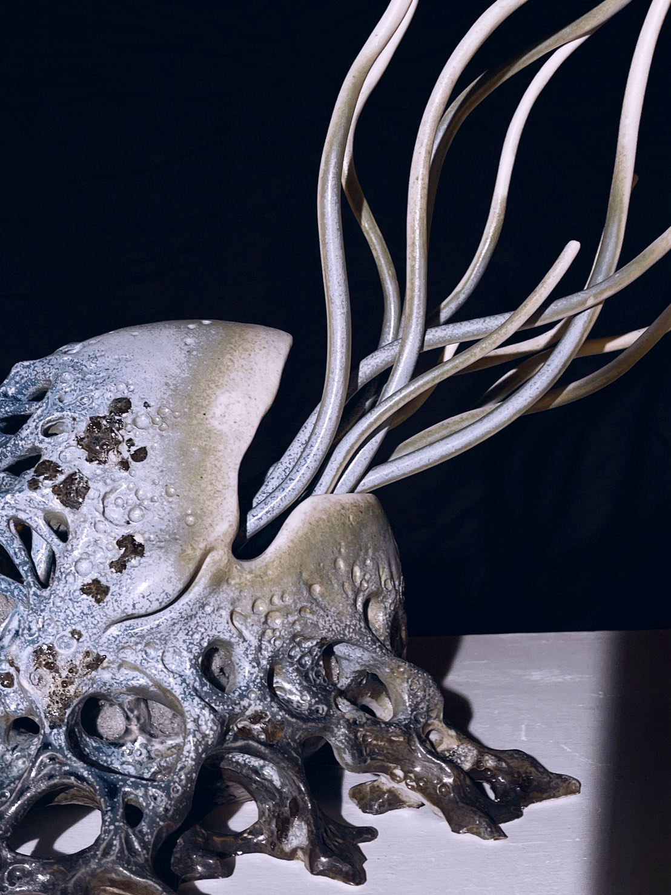


以古生物鸚鵡螺為原型與自然重塑，探索生命與大地相依的共生關係。結合海洋與土地元素， 展現漫長演化中的堅韌與多變，並透過個人想像衍生出具備再生與復甦意象的系列生物。
釉藥加入火山岩石，調配與海洋像似深藍色，高溫燒製後留下微妙的礦物質感，與土坯表面的手捏生物紋理相互呼應，形成既粗礦又細膩的對話。
以海為靈感發想，運用自然元素和深海中生物的外型作參考在作品上。以不同紋理呈現殼體形態，觸鬚向上流動表現生命流動。 從自然界有機形體出發，描繪螺旋、海洋、流體等意象，最終確立以「螺形」為造型核心。
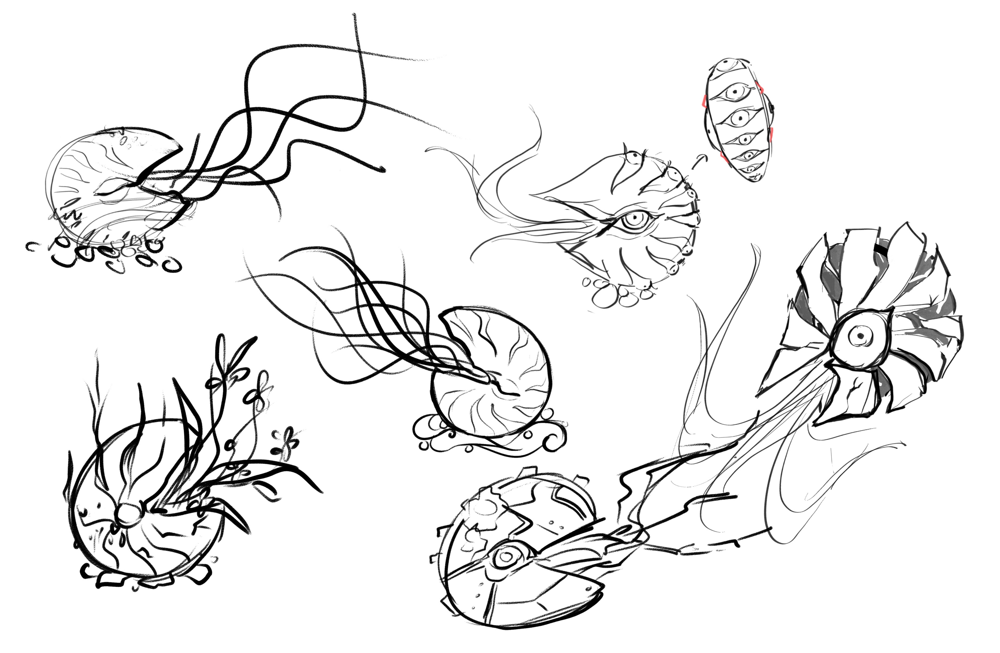
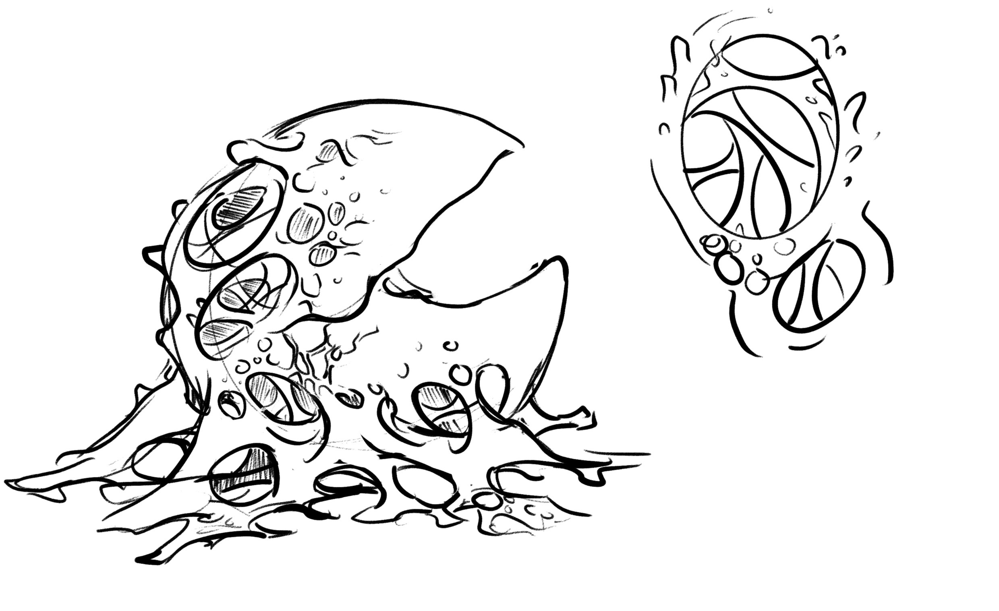
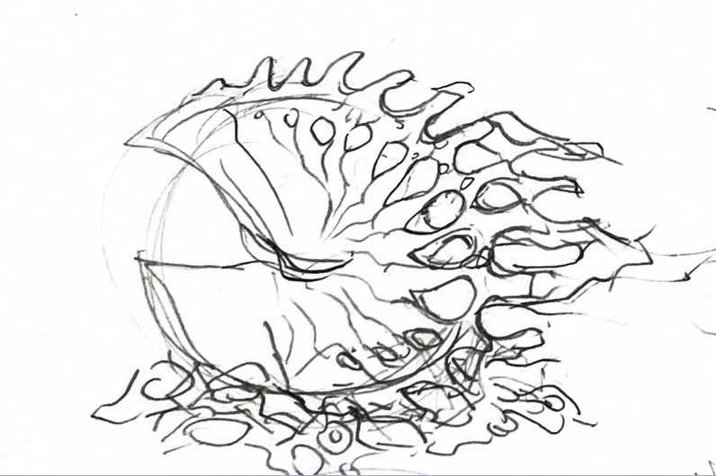
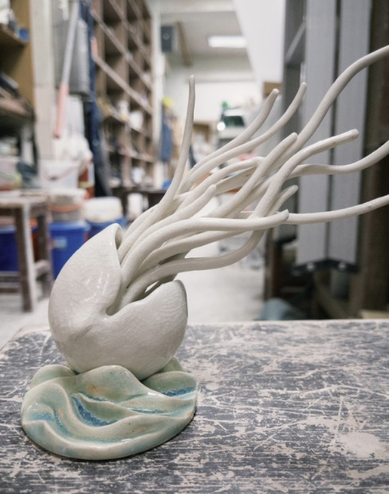
前期製作縮小版模型，驗證草圖中的形體能否在實際製陶中實現，並調整各部位的重量分佈與重心。其中嘗試不同的土和造型能否解決觸鬚在高溫燒製下不軟化的問題，最終選用較好塑型且較堅固的美國土。
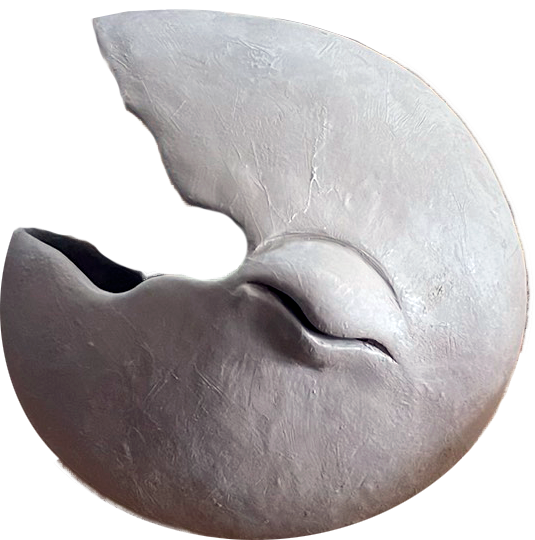
以螺形的黃金比例與草圖做參考，中型螺先固定好外觀後用手動挖空土坯製作殼形，大型螺則是使用土條成形慢慢製作。 因殼形中空又得要維持形狀，在製作時須等待土自然風乾較堅固才能微調細修。
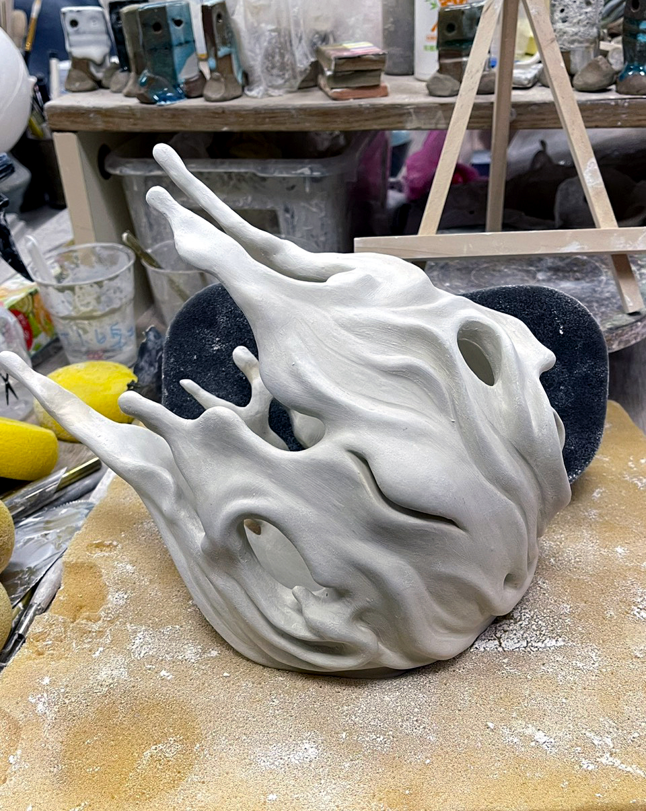
開始嘗試製作較大且有變化的造型，根據試作結果調整螺形邊緣弧度與底座比例，確保燒製後不會因重心偏移而傾倒。
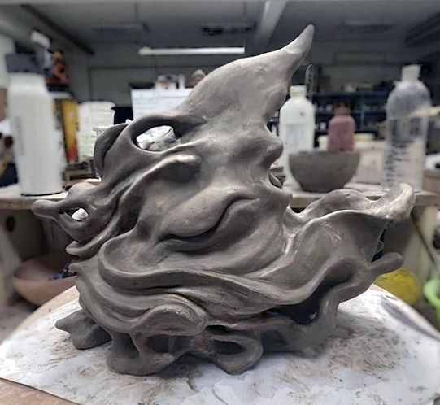
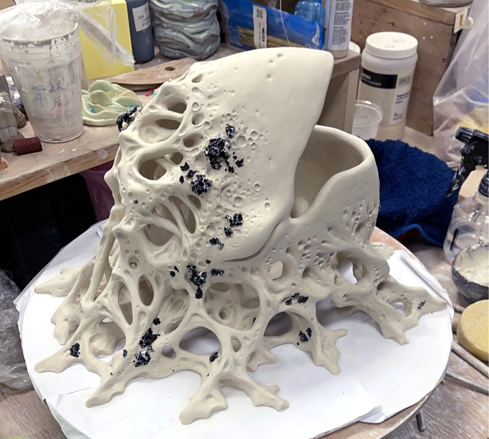
大致外觀確認後，開始增加細節，以手捏技法加入有機凸起紋理，以及生物機能造型，使每件作品保有獨特的手感個性。
釉藥實驗是我最苦惱的環節，花最多時間調配配方，畢竟只要窯不乖乖，同個配方出來的顏色可能會不同。 我測試了20幾種配方，從青冰裂釉、黑金錳釉到金紅石藍釉，嘗試釉藥之間的搭配與厚度對色澤和質感的影響，最終選定金紅石藍釉以高溫 1230°C 燒製，混搭冰裂綠釉， 呈現冷澀的礦物質感與深藍水流光澤。
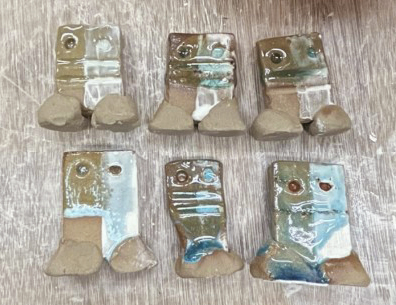
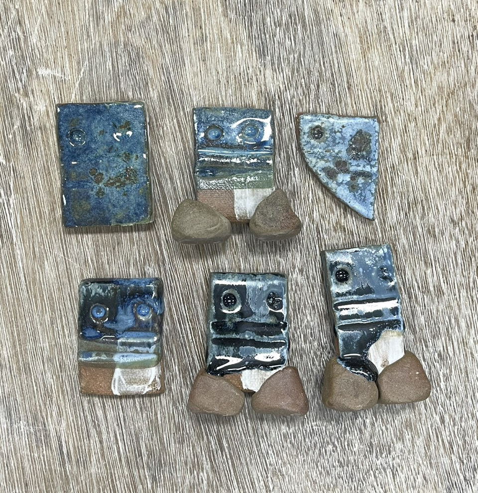
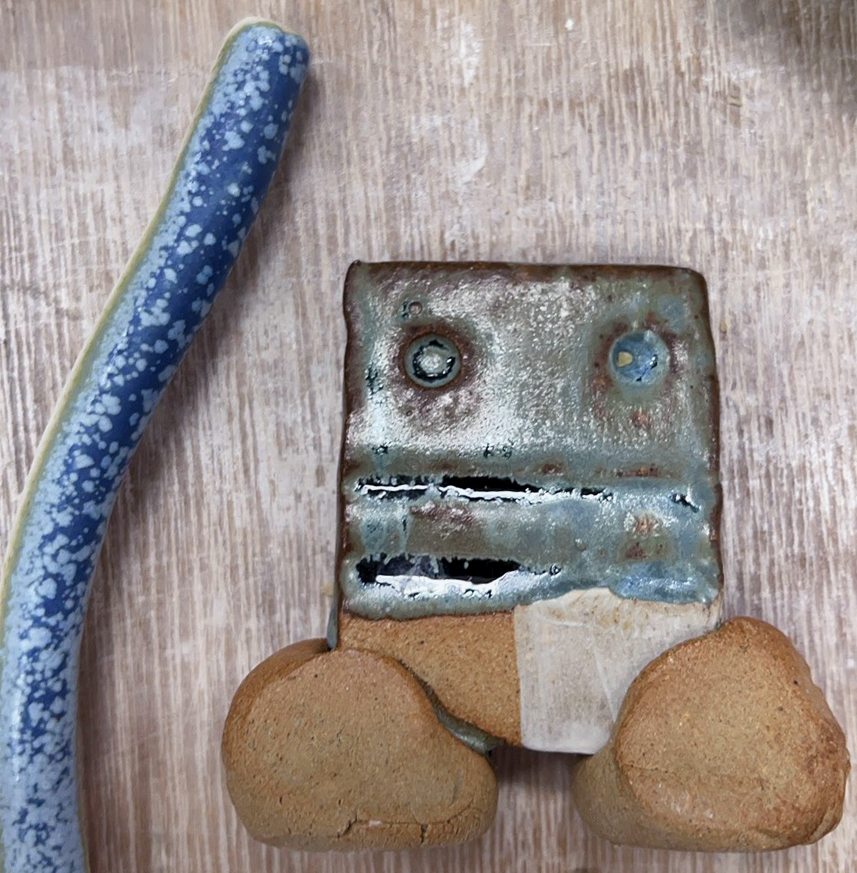
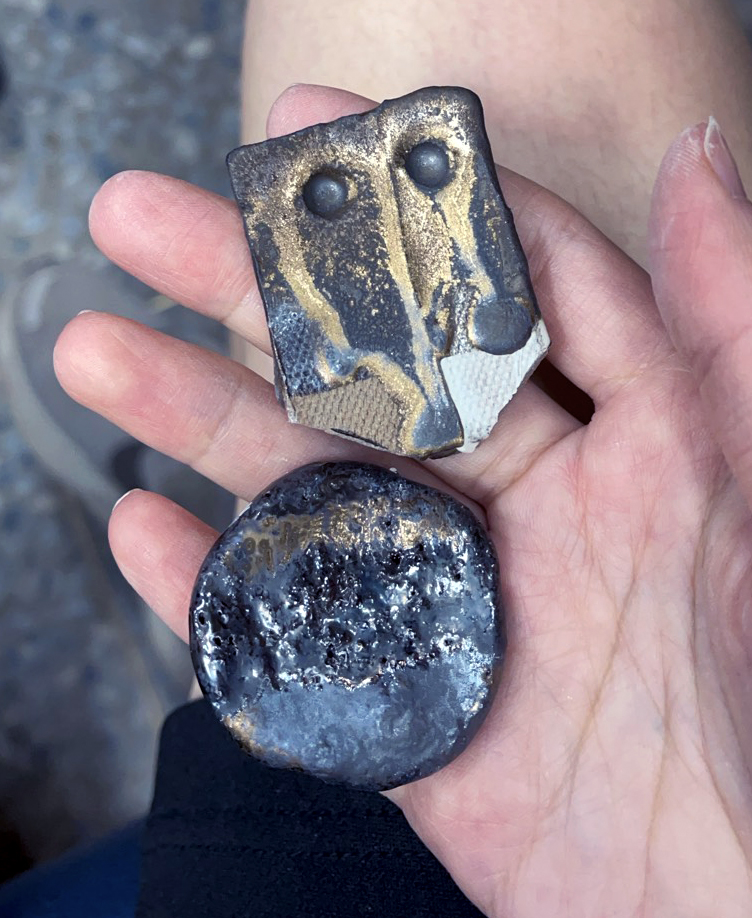
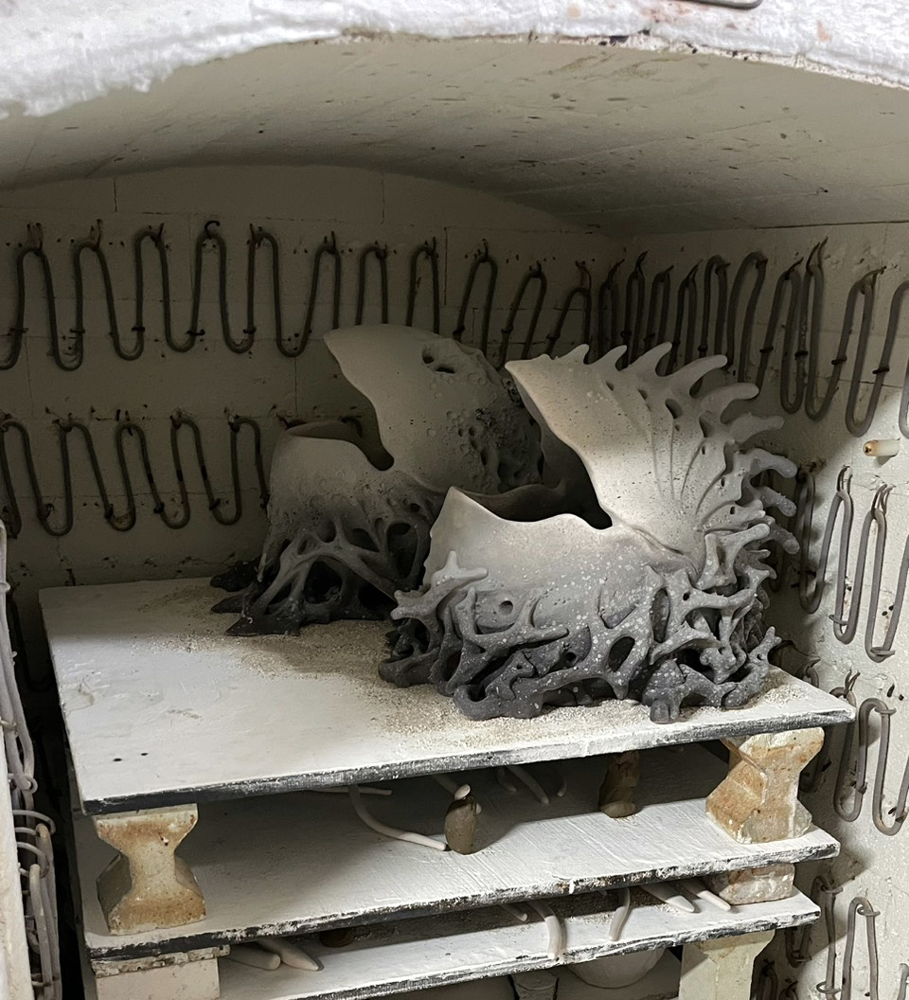
先以 800°C 素燒固化土坯，以噴釉的方式上色後燒至1230°C 進行釉燒。窯內溫度曲線對最終色澤影響深遠，每次開窯都是意外的驚喜。

歷經兩學期的製作，系列作共六件作品透過質感、裂紋與光澤，訴說著生命在脆弱中重生的力量。
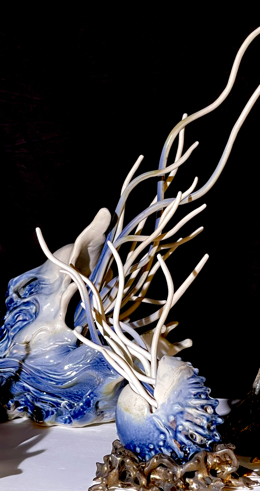
近距離觀察釉面，可見金紅石藍釉在高溫冷卻後留下的礦物質感和深藍光澤感，與手捏紋理交織成獨特的視覺肌理。
Ceramics · 2026